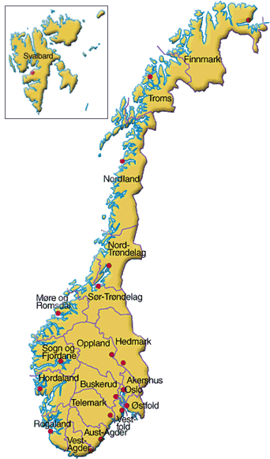

Королевство Норвегия располагается в западной части Скандинавского полуострова и на большом количестве прилегающих к Скандинавскому полуострову мелких островов, а также архипелаге Шпицберген (Свальбард), островах Ян-Майен и Медвежий в Северном Ледовитом океане. Зависимой территорией Норвегии является остров Буве в южной части Атлантического океана. Норвегия граничит с тремя государствами: со Швецией — на востоке, с Финляндией и с Россией — на северо-востоке. Страну омывают Баренцево море — на северо-востоке, Норвежское море — на западе и Северное море — на юго-западе. Название страны происходит от древнескандинавского слова Norvegr — «путь на север»